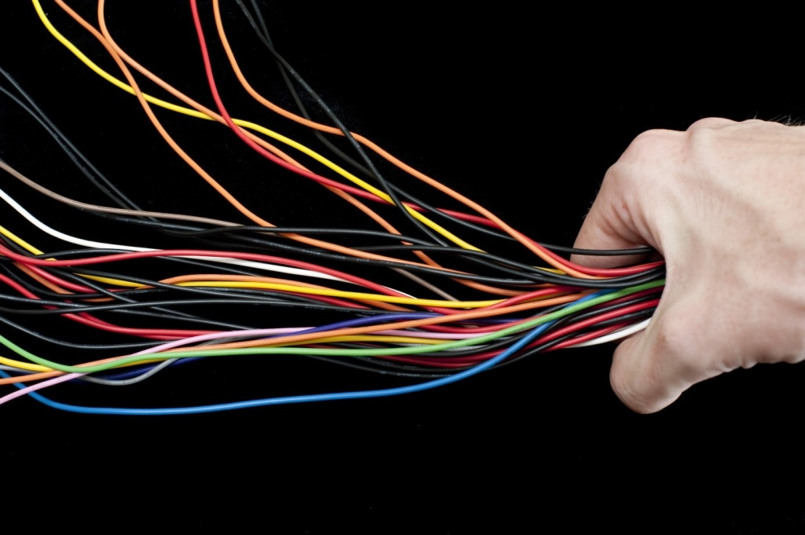
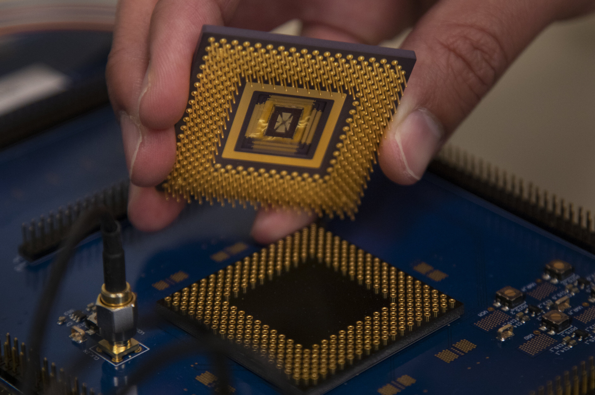
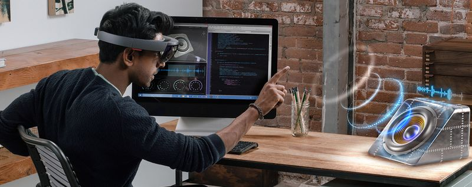
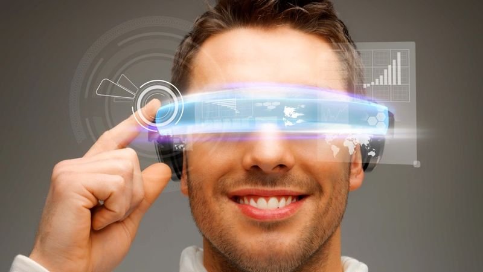

Писатели-фантасты предвидели, что когда-то в мире появится множество уникальных технических приспособлений, способных подарить человеку новые возможности, ощущения, эмоции. Например, Рэй Брэдбери предсказал изобретение «ракушек», которые стали прототипами современных наушников, а Жюль Верн успешно описал не существовавшие в его время телевидение и видеосвязь. Вот только кое-что осталось за пределами прогнозов авторов – это то, что возникает в стремительно развивающихся компьютерных технологиях сегодня.
Провода – в прошлом
Новые компьютерные технологии, которые человечество сможет увидеть уже в ближайшем будущем, больше не будут зависеть от шнуров и кабелей, пусть даже самых тонких и едва заметных. Над достижением подобного результата трудятся сотрудники кембриджского Центра микрофотоники при Массачусетском технологическом институте. В настоящий момент именно провода являются элементами, соединяющими важные звенья и части любых процессоров. Однако ученые предполагают, что им удастся заменить их импульсами германиевых лазеров, которые окажутся способны передавать информацию в битах и байтах в 100 раз быстрее, чем традиционные фидеры с перемещаемыми по ним электронами.
В основе этой новейшей компьютерной технологии лежит применение системы скрытых каналов. Она заключается в следующем: в множестве специальных разъемов устанавливаются микроскопические датчики и сенсоры, которые передают световые импульсы и трансформируют их в точную информацию. Подобное решение поможет человечеству не только получить более высокую скорость передачи данных (чип с германиевым лазером уже показал значение в 1Тб/с, что в 2 раза быстрее проводных устройств), но и внести частичный вклад в стабилизацию экологической ситуации на планете. Эта новая технология в компьютерной технике не будет потреблять и вырабатывать энергию, а, следовательно, позволит снизить уровень выбрасываемого в атмосферу тепла.
Мемристорная память
Новая технология мемристор, или резисторов памяти, позволит компьютерной сфере стать более емкой, ведь эта разработка обещает перевести все цифровые устройства с флеш-памяти на максимально долговечный и скоростной принцип хранения информации. Исследователи и программисты назвали его ReRAM (Resistive Random Access Memory).
Уникальные чипы будут состоять из чередующихся слоев диоксида титана и платины. Независящие от энергии схемы помогут человеку обрабатывать данные в 1000 раз быстрее, совершать 1000000 перезаписей против возможных сегодня 100000 подобных циклов и обрабатывать сведения практически моментально. Мемристоры способны стать настоящим прорывом среди новых открытий в компьютерных технологиях, ведь внедрение их в переносные устройства, например, плееры, электронные книги и портативные ноутбуки, сделает возможным регулярно иметь с собой уже не гигабайты, а целые терабайты различных материалов! В планах разработчиков из Quantum Science Research, США, также числится создание платы с объемом памяти в 1 петабайт, равным свыше 1000000 гигабайт. Фактический размер такого чипа поражает воображение – благодаря использованию мемристор он окажется не больше 1 см.
Электроника для оптимизации тела
Следующие новые разработки в компьютерных технологиях охватывают целый комплекс приспособлений: это и наушники-вкладыши, фиксирующие частоту сердцебиения, и надеваемые под одежду сенсоры для контроля и корректировки осанки, и тактильные подкладки для обуви, способные с помощью вибрирования и встроенных датчиков GPS указать своему владельцу путь до места назначения. Все эти устройства можно охарактеризовать словосочетанием «носимая электроника» – это «умные» гаджеты, которые за счет последних достижений науки и техники заметно упрощают людям жизнь.
Например, онкологи ведущих клиник уже используют полуочки/полусмартфон Google Glass на базе Android для того, чтобы проводить сложные операции своим пациентам и вести сбор материалов в тех или иных клинических случаях. К помощи этой разработки прибегают и обычные граждане, которые благодаря голосовым командам:
- отправляют сообщения различным адресатам;
- следят за погодными изменениями;
- находят подходящие авиарейсы;
- быстро узнают о правилах оказания первой медицинской помощи в ситуациях, угрожающих жизни и здоровью.
Улучшение техники и ее свойств
Новые разработки в области компьютерных технологий не существуют опосредованно от остального мира, а, наоборот, служат разрешению острых проблем, важных для продолжения благополучной жизни общества. Так, сегодня экологи вместе с нанотехнологами и инженерами трудятся над созданием эффективных, но не угрожающих природе механизмов, транспортных средств, роботов. Здесь одной из первоочередных задач является искусственное структурирование углеводорода, входящего в состав композитных монолитов. Это поможет сделать производимые автомобили и другие машины, не предназначенные для передвижения, легче на 10%, а, следовательно, и снизить количество токсичных выхлопных газов, которые образуются при сгорании топлива.
Еще одна немаловажная тема – это вопрос длительного хранения энергии. Специалисты считают, что действенным окажется массовый выпуск в свет инновационных батарей – проточных для удержания жидкого химического потенциала веществ, вместительных графеновых конденсаторов для многотысячного заряжения и разряжения аккумуляторов, нанопроволочных литиево-ионных источников постоянного тока для сбережения солнечного излучения.
Грандиозная визуализация
Новые технологии в области компьютеров сделают доступным качественно иное восприятие реальности. Исследователи заверяют: привнесение в мир возможности просмотра телевидения без использования экранов приурочено уже к ближайшему будущему. О чем же идет речь? О создании головной транспортабельной гарнитуры виртуальной действительности (шлемов или очков), специальных смартфонов для слабовидящих и пожилых представителей населения, устройств для приема и отправки видеоголограмм.
То, что раньше можно было увидеть разве что в голливудских кинолентах, сегодня постепенно становится явью благодаря особым проекционным пленкам, панорамному изображению в формате 3D и бинауральному звуку, который записывается в микрофон, точно повторяющий форму человеческих ушей!
Интерфейс «мозг – компьютер»: киборгизация
Наконец, последняя новая технология в мире компьютеров представляет собой соединение главного органа ЦНС человека с высокоскоростной электронно-вычислительной машиной. Сотрудники Гарварда, США, уже добились в этой области значительных результатов – они создали едва ощутимую полимерную сетку с электродами, большая часть которой является свободным пространством. На основание (каркас) в мозгу способны и должны прикрепиться нейроны, что позволит инородной ткани стать одним из элементов организма, но продолжить выполнять заложенные в нее функции.
В 2012 году команда начала проводить эксперименты на мышах и крысах. Это предприятие завершилось успехом. Микроскопические изделия диаметром в несколько сантиметров были внедрены животным при помощи ультратонкой иглы (100 микрометров) прямо через черепа в определенные участки мозга. Позднее выяснилось, что сетки благополучно прижились и продолжили интегрироваться в нейронную среду тем лучше, чем дольше они там находились.
Подобный прорыв может оказаться крайне полезным с практической точки зрения. Нейроинтерефейсы дадут возможность полнее исследовать работу человеческого мозга, при необходимости активизировать те или иные доли, предотвращать и устранять нарушения, возникающие при болезнях Паркинсона, Альцгеймера и других, а также управлять сложными техническими конструкциями одной лишь силой мысли! Однако такая разработка влечет за собой и множество вопросов этического характера. Например, насколько правомерно будет проводить внедрение нейронного «чипа» маленьким детям? Что делать, если влияние на отделы мозга спровоцирует проявление нетипичных реакций? Не потеряет ли человек своей воли и свободы после подобного шага? На эти вопросы нанотехнологам, инженерам и философам будущего еще только предстоит ответить.